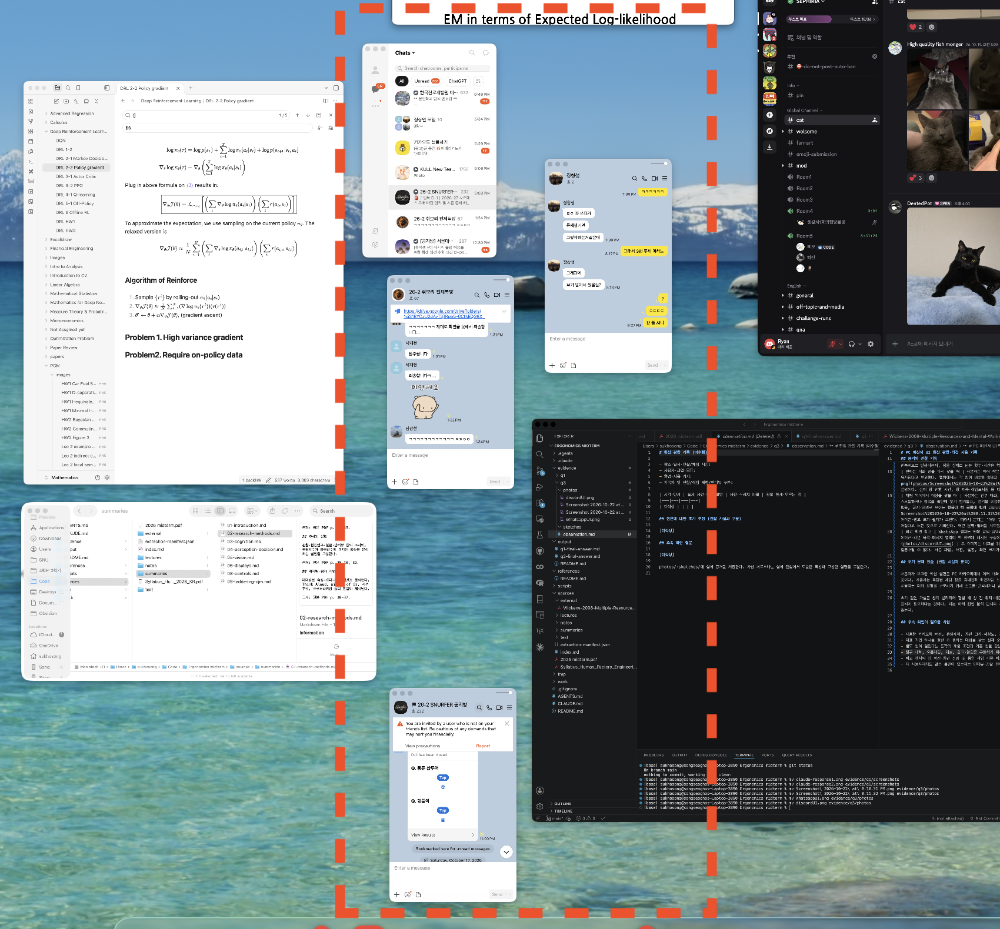

채팅마다 생기던 비슷한 창들을 하나로 합쳐, 창 개요에서는 구별되는 창 하나로 찾고 창 안에서는 이름 목록으로 친구를 고르게 한다

실제 창 개요 캡처의 왼쪽 아래 부분 확대(2026-10-22, 점선은 본인 표시). 대화창 3개가 같은 배경·배치로 비슷하고 상단 이름은 작다.
모의 화면. 창 수·크기·배치는 예시이며 비교 조건이 아니다. 실제 macOS 창 개요를 구현한 것이 아니다.
모형(가상 대화). 선택 행·창 제목·대화 상단 이름이 함께 바뀌고 대화별 초안이 유지된다. 별도 보기는 같은 화면 위 패널로 단순화했다.
나란히 봐야 할 때만 '별도 창으로 보기'로 분리하고 다시 통합한다. 패널 ①은 관찰 자료, ②·③은 제안 설계의 모의 화면이며 효과를 측정한 결과가 아니다.